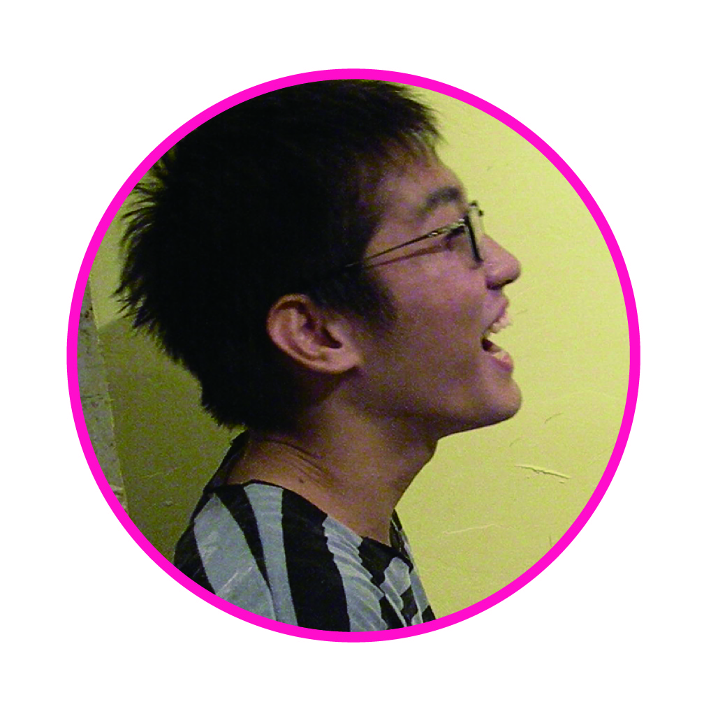
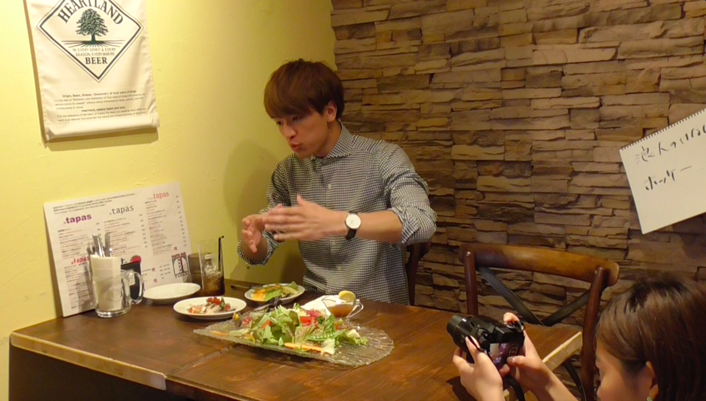
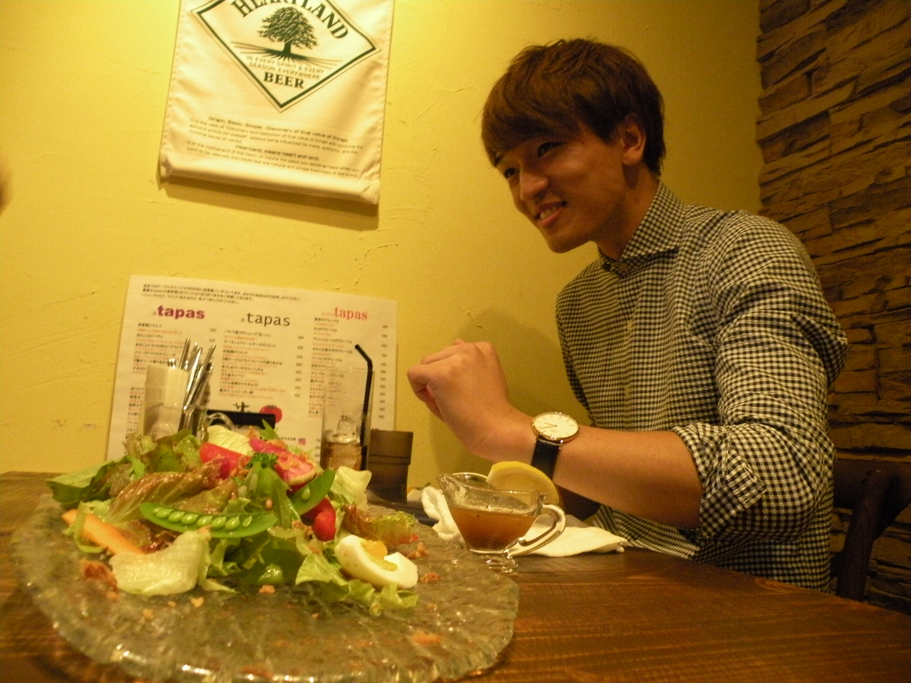
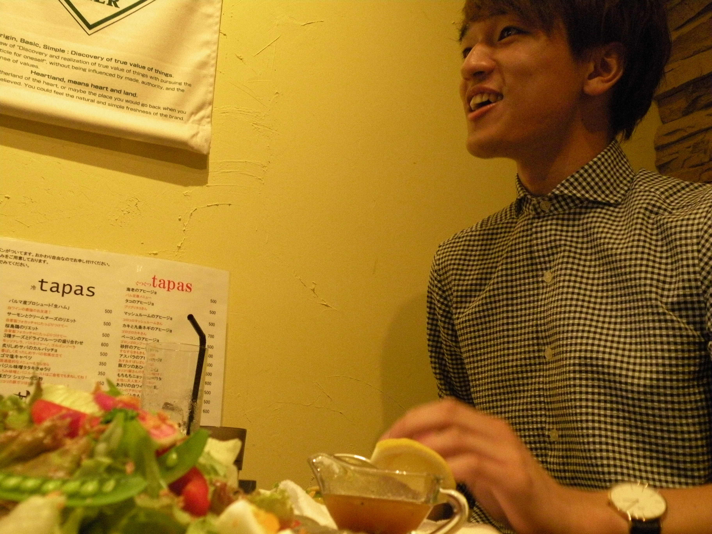
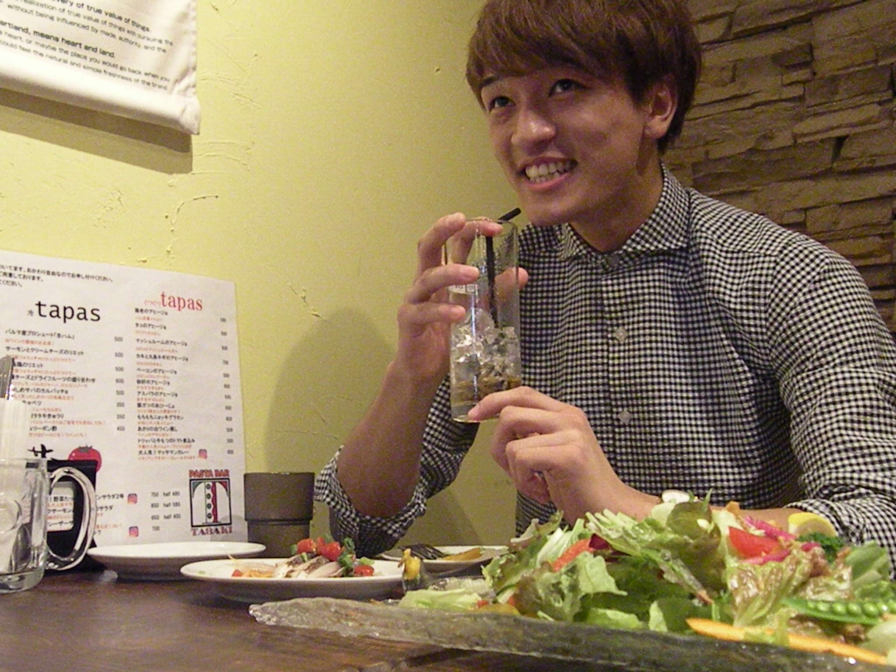
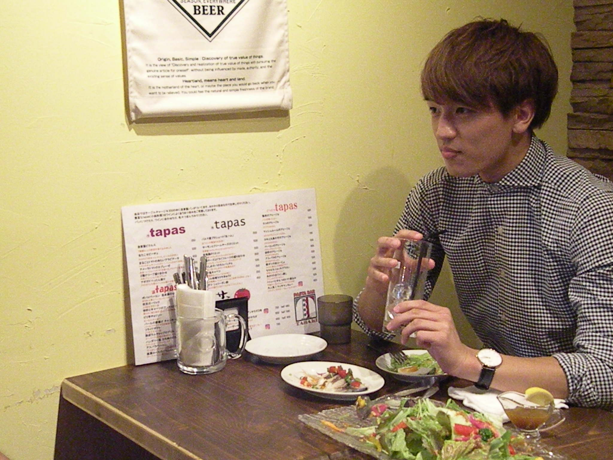
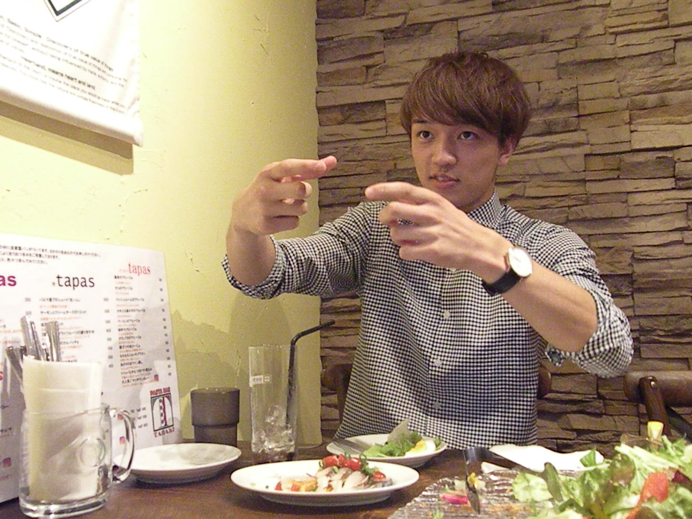
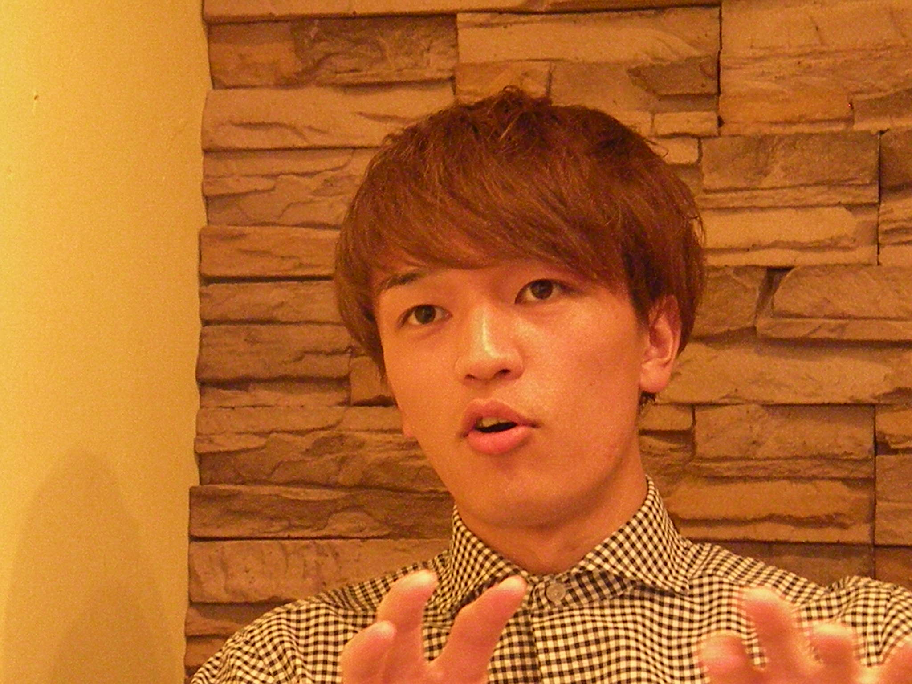
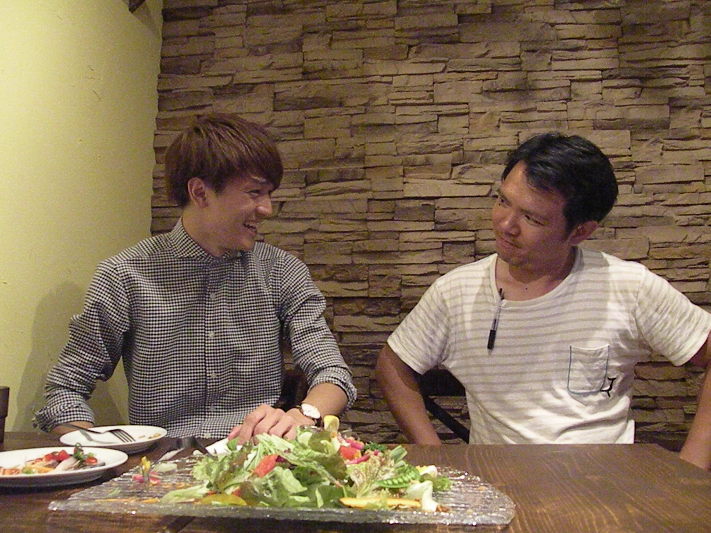

改めまして、よろしくお願いします。
よろしくお願いします。

ゴハンノハナシ
我々食べ物系の団体なので、食べ物に関する質問をしたいと思うのですが、フードファイトが趣味だとか？
そうなんです、甘太郎さんの企画で10ポンドのステーキを食べるっていうのがあったんですけど
10ポンド。
※10ポンド＝4.5キロくらい
45分で食べきるっていうのを友達と応募したんですよね、まあハズレちゃいましたけど。
でも実際「10ポンド一人で食えるぜ」みたいな感じではないんですか？
制限時間があるから厳しいですね（笑） 制限時間がなかったら一人で何ポンドとかやってみたいと思いますね。でも 2ポンド3ポンドくらいだったら余裕かな。
3ポンドって普通じゃないですか？
と、思うじゃないですか。でも 「3ポンド45分」って言われたらキツくないですか？
...3ポンド...1350gくらいですよね...確かにきついな。。
※ちなみに３ポンドステーキはこれくらい。秋葉原なのでアクセスもよいかも
普段はやっぱりよく食べるんですか？
1回に食べる量が多いっていうよりは、1日で4食5食って食べる方が多いです。結構間食もしてしまうので、割とカラダにいいかって言ったらアレですけど（笑）
でも食べる日は、朝食を抜いて、昼にめちゃくちゃいっぱい食べるんですよね。
学校の時も？
うーん学校だったら...神楽坂にいた時はよく大勝軒の大豚とか週2、3回は食べてましたね。豚麺だと450 gの麺なんですけどそれの大盛りで600g、いつものやつの野菜マシマシででかい肉塊が２つ。
食えるんですか。
食べちゃいますね。
そのあと授業寝ないんですか？
寝ないっす。全然。
（指示入る）
あっ指示入っちゃいました...我々ので何が聞きたいかってなったんですね、飛翔さんに...
あっつばささんって呼んでいいですか？
いや全然いいですよ、むしろつばさ以外何があんの（笑）
つばさくん、つばさん、ばっさー、ってあったんですよ。
ばっさーで。
いや、すいません、つばささんでいきましょう。
ホッケーノハナシ
アイスホッケーをやってらっしゃるということでそんなにガタイが良いんですか？
自分は中高の時は、体重を落とす方の競技をやってたんですよ。駅伝ですね。長距離。つける体力が今のホッケーと全然違うので、体を大きくするという線では結構悩んでますね。
なるほど、（長距離と違って）アイスホッケーって選手1人の試合時間が1、2分だとか？
そうなんですよ！よくご存知で。
勉強しました。
さすがっす。（笑）
ホッケー情報をぶち込みたいなと思いまして。
そうなんですよ。1分2分くらいで回転させないと保たないんで（選手が）スタミナ的には中学高校頑張ってきた長距離の延長線上でいけますけど、体作りっていう面では結構異なりますね。

やっぱりこの1年で体重は増えたんですか？
この1年で体重は60 kgから72 kgまで増えました。
72 kg?! 全部筋肉ですか？
いや、食べて脂肪も増やしてるので。12 kg太りました。
たぶん僕つばささんと同じ身長と体重なんですよ。全然体が違う。ぶよぶよです。
何かスポーツやられてるんですか？
あ、僕に質問しちゃいますか？
中学の時は柔道やってたんです。高校は柔道部なくてやめちゃったんですけど。当時体が小さくて50 kg級だったんです。（最高学年の）中3が1人だったので、団体戦で「先鋒、俺」っていう。
（指示入る）
あ、僕の話になっちゃった。
ロウニンノハナシ
かっこいいだけじゃない、つばささんの一面も聞きたいなと思って。浪人されてますよね？
浪人の時に仲良くなった友達は、中学高校の友達と同じくらい深いつながりができたとは思っていますね。あと浪人中の生活は、勉強だけやってるとなかなか続かない性格なので、週1回か2回は必ず体を動かすって決めていましたね。だから浪人は一切苦じゃなかったかな。
今でもその友達とは連絡はとっていますか？
とってます。いつも一緒にいた５人のうち2人がミスターに出ているんですよね。
ええーっ！
今でも彼らはお互いに影響を受けたり、与えたりできている関係なので、よかったなあって思いますね。
じゃあ2人ともバシッとミスターになって、写真撮りましょうよ。
カッコイイですね。そういうの憧れます。
カナマチノハナシ
（ピザの）タサキは5、6回目ですね。くるの。
常連ですね〜。大食いだったら「珍来」行ったほうが良いですよ。特盛ってあるの知ってます？
※珍来: 金町といえばここ！という中華料理屋さん。しれっと大盛りを勧めてくるけど、とにかく量が多い！床が滑る。
知ってます。
ああ〜〜っ！（崩れ落ちる）
部活のミーティングが夜に金町である時は、「珍来」か「MARUKO」かガストですね。
※MARUKO: 二郎インスパイア系のラーメン屋。昼夜問わず理科大生で賑わう。
ガスト、この間行ったら3人で¥25,000いきました。
¥25,000?!
最初全員５品ずつ揃えてからスタートして、2時間くらいずっと食べ続けてましたね。お酒なしで。
僕この間友達とサイゼリアに行ったんですけど、酒入れて五人で¥15,000ですよ。やるなぁ。
僕なんかの比にならないくらい先輩たちも食べるんで。体の大きい人も小さい人も。
金町って駅側に来ないとお店があまりないじゃないですか。大学からの距離と、休み時間50分っていうのを考えると（昼休みは）難しいかなぁ。だから学食で食べるか、午後から授業の時は自宅近くで食べてきちゃいますね。あんまり金町でごはん食べないかな。
金町に「こんなお店があったらいいな」っていうのはありますか？僕はハンバーガーとかもっと欲しいんです。
いいですねハンバーガー。確かにマクドナルドみたいなファストフード系のお店は欲しいんですけど、チェーン店じゃなくて、学生にもリーズナブルで、「大盛り無料にしてあげるよ」みたいに店主の方とコミュニケーションができるようなお店があるといいですよね。あと学食もいろいろメニューは出してくれてるけれど、普段学食で食べられないようなメニューがいいかなぁ。
これはもう我々がビシッと発信していくんで。我こそはっていうお店の方が出てきてくれると思います！
ごはんはどうでしたか？
普段食べられないような、モチモチした麺が印象的でした。とても美味しかったです。 秋の限定メニュー「ポルチーニ茸のクリームソース レジネッテ」は、濃厚なクリームに負けないポルチーニの香りと、それをしっかり支えるレジネッテのおいしいハーモニー。
10月いっぱいまで。お早めに！
